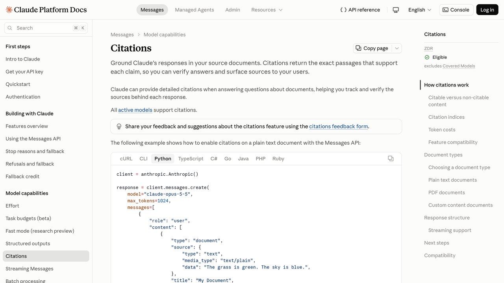

Grounding: cómo evitar que tu IA invente datos conectándola a la realidad
Nuestra guía de alucinaciones te enseñó a detectarlas. Esta te enseña a evitarlas desde el diseño: la técnica se llama grounding, y no es un modelo más listo, es darle al modelo algo real donde apoyarse antes de responder.
Nuestra guía sobre alucinaciones de la IA se centra en cómo detectar cuando un modelo se inventa algo con total seguridad. Esta guía va un paso antes: cómo diseñar tu agente para que la alucinación sea mucho menos probable desde el principio, en vez de solo aprender a pillarla después de que ya haya pasado.
La técnica se llama grounding ("anclaje" o "fundamentación") y la idea de fondo es simple: en vez de dejar que el modelo responda solo con lo que recuerda de su entrenamiento, le das acceso a una fuente externa verificable en el momento de responder, y le pides explícitamente que base su respuesta en esa fuente, citándola. Es el mismo principio detrás de RAG, del tool use de nuestra guía de agentes con datos reales, y de cualquier motor de búsqueda con IA como Perplexity.
El nombre viene de la idea de "anclar" (ground, en inglés) una respuesta a algo sólido y verificable, en vez de dejarla flotando solo sobre los pesos internos del modelo. Es la misma intuición que separa una afirmación con fuente citada de un rumor sin origen — el contenido puede sonar idéntico, pero solo uno de los dos se puede verificar de forma independiente sin tener que confiar ciegamente en quien lo dice.
Compara los dos enfoques, en vivo
Esta demo no llama a ningún modelo de IA — compara, con datos reales obtenidos en directo, cómo se ve una respuesta "de memoria" (sin verificar) frente a una respuesta "con grounding" (anclada a una fuente consultada ahora mismo), usando el mismo dato de tipo de cambio de divisas.
Pulsa "Comparar" para ver el ejemplo.
Pulsa "Comparar" para ver el dato real.
La caja de la izquierda simula lo que pasa cuando un modelo "recuerda" un tipo de cambio de su entrenamiento, que puede tener meses de antigüedad. La de la derecha usa Frankfurter, una API gratuita del Banco Central Europeo, consultada en este instante.
Las tres formas de hacer grounding
Busca fragmentos relevantes en tus propios documentos y se los pasa al modelo antes de responder. Ideal para bases de conocimiento internas, manuales, políticas de empresa.
Consulta una fuente en vivo (precio, clima, estadística oficial) en el momento de responder. Ideal para datos que cambian constantemente.
El modelo busca en la web abierta y cita las páginas que encontró, como hace Perplexity. Ideal para preguntas generales sobre actualidad.
Nuestra guía sobre RAG explicado cubre la primera variante en profundidad, y la de agentes con datos reales cubre la segunda con código funcional. Las tres comparten el mismo principio de fondo pese a la implementación distinta: nunca dejar que el modelo responda solo de memoria cuando existe una fuente verificable más fiable a mano.
La complejidad de montar cada una es muy distinta, y conviene elegir la más simple que resuelva tu problema, no la más sofisticada. Tool use contra una API, como en la demo de esta guía, se monta en una tarde: una función, un esquema, listo. RAG exige trocear documentos, generar embeddings, montar una búsqueda por similitud y mantener ese índice actualizado cuando los documentos cambian — días de trabajo, no horas. La búsqueda web integrada es la más rápida de activar (a veces un solo parámetro en la llamada a la API del modelo), pero la que menos control te da sobre qué fuentes exactamente consulta.
Un error común es empezar por RAG "porque es lo que todo el mundo usa" cuando el problema real es mucho más simple: si lo que necesitas es un dato concreto que cambia (un precio, una fecha, un estado), tool use resuelve el problema con una fracción del esfuerzo de montar un pipeline RAG completo. Guarda RAG para cuando la fuente de verdad es información no estructurada y extensa —documentos, manuales, políticas— que no encaja en una llamada de API simple.
Por qué esto importa más allá de la exactitud técnica
La diferencia entre una respuesta con grounding y una sin él no es solo si el número es correcto — es si tú, como persona que recibe esa respuesta, puedes verificarla sin tener que confiar ciegamente en el modelo. Una respuesta que cita "según la API del Banco Mundial, actualizado el 13 de julio" te da algo que puedes comprobar tú mismo en cinco minutos si lo dudas. Una respuesta sin esa cita solo te da la palabra del modelo, que no tiene ninguna obligación de ser correcta ni forma de demostrarlo dentro del propio texto.
Esta distinción importa especialmente en contextos donde la verificabilidad no es opcional: periodismo, investigación académica, análisis financiero, cualquier documento que otra persona va a revisar y cuestionar después. En esos contextos, un agente sin grounding no es solo menos preciso, es estructuralmente inadecuado para la tarea, sin importar cuánto haya mejorado el modelo subyacente en benchmarks generales — el problema no es la inteligencia del modelo, es la ausencia de un ancla verificable en su respuesta.

Cómo instruir al modelo para que cite su fuente
Darle al modelo acceso a una fuente no basta por sí solo — también hay que instruirle explícitamente para que la use y la cite, en vez de "adornar" la respuesta con conocimiento propio sin marcar la diferencia entre lo uno y lo otro. Una instrucción de sistema típica para esto incluye tres elementos: la obligación de basar la respuesta en la fuente proporcionada, qué hacer si la fuente no cubre la pregunta (decirlo, no rellenar el hueco), y el formato exacto de la cita.
Responde ÚNICAMENTE con información contenida en el CONTEXTO de abajo.
Si el contexto no contiene la respuesta, di explícitamente
"No tengo esa información en las fuentes disponibles" —
no completes el hueco con conocimiento general.
Cita la fuente exacta (nombre y fecha) de cada afirmación concreta.
CONTEXTO:
{resultado_de_la_herramienta}
PREGUNTA: {pregunta_del_usuario}
La frase "si el contexto no contiene la respuesta, dilo explícitamente" es, en la práctica, la línea más importante de todo el prompt. Sin ella, un modelo tiende a mezclar el contexto real que le diste con su conocimiento de fondo sin avisar, produciendo una respuesta que suena igual de fundamentada esté o no basada de verdad en la fuente que le pasaste.
Un caso real donde esto se nota especialmente: un chatbot de atención al cliente conectado a la base de conocimiento de una empresa mediante RAG. Sin la instrucción explícita de admitir cuando no sabe algo, un modelo tiende a "ayudar" combinando el fragmento real que recuperó con suposiciones razonables pero no verificadas sobre política de devoluciones o plazos de envío — información que suena a la empresa, pero que nadie de la empresa escribió. Con la instrucción bien puesta, el mismo chatbot responde "no tengo esa política documentada, te paso con una persona" cuando de verdad no hay fragmento relevante, en vez de inventar una respuesta plausible que luego alguien tiene que desmentir al cliente. Ese montaje completo — qué documentos darle, cómo obligarle a abstenerse y cuándo escalar a una persona — lo desarrollamos en la guía sobre montar un bot de atención al cliente que no invente respuestas.
Esta misma estructura de prompt funciona igual para el caso de tool use: en vez de "CONTEXTO" con un fragmento de documento, el marcador contiene el resultado real de la API consultada, y la instrucción de "no completar el hueco con conocimiento general" sigue aplicando exactamente igual si la herramienta no devolvió un dato para lo que se preguntó.
Qué el grounding no arregla
Un "grounding" superficial que no cambia nada de verdad
Pedirle al modelo que "cite fuentes" sin darle realmente acceso a ninguna fuente externa no es grounding, es solo una instrucción de estilo — el modelo puede inventar también la cita, con el mismo aplomo con el que inventaba el dato. El grounding real exige que la fuente exista de verdad y llegue al modelo como parte del contexto de esa llamada concreta, no solo como una petición de formato.
Una fuente incorrecta sigue siendo incorrecta
Si el documento o la API que consultas tiene un error, el grounding hace que el modelo repita ese error con la misma confianza, solo que ahora con una cita que parece darle más autoridad de la que merece. Y tampoco lo arregla entrenar el modelo con esos documentos: hay medición de que meter conocimiento nuevo por esa vía aumenta las invenciones, como contamos en fine-tuning, prompting o RAG.
Interpretar mal un dato correcto
Recuperar el fragmento correcto no garantiza que el modelo lo lea bien — puede confundir una cifra con otra similar en el mismo documento, o sacarla de contexto. El grounding reduce la invención, no elimina el error de lectura. Y cuando la fuente es una imagen o un PDF escaneado, ese error de lectura es bastante más probable: lo desglosamos en la guía sobre cómo analizar imágenes y PDFs con IA.
Una fuente que no cubre bien la pregunta
Si el sistema de recuperación (RAG) trae fragmentos poco relevantes, o la API consultada no tiene el dato exacto que se pidió, un modelo mal instruido puede "estirar" lo que sí encontró para parecer que responde, en vez de admitir que la fuente no cubre la pregunta.
Fuentes desactualizadas que parecen recientes
Un documento indexado hace meses puede seguir apareciendo como la mejor coincidencia en una búsqueda RAG aunque exista una versión más reciente en otro sitio. El grounding cita "una" fuente, no necesariamente "la fuente más actualizada" — mantener el índice al día es trabajo aparte, no algo que el grounding resuelva por sí solo.
Cómo probar si tu grounding funciona de verdad
Antes de confiar en un sistema con grounding, vale la pena someterlo a tres pruebas deliberadas: preguntar algo que la fuente NO cubre (¿admite que no lo sabe, o inventa igualmente?), preguntar algo con una respuesta ambigua o contradictoria entre fuentes (¿señala la ambigüedad, o elige una versión sin avisar?), y preguntar lo mismo dos veces con distinta redacción (¿da la misma respuesta fundamentada, o varía de forma inconsistente?). Un sistema de grounding bien diseñado pasa las tres pruebas con comportamiento predecible; uno mal diseñado suele fallar la primera, que es la más reveladora.
Vale la pena repetir estas tres pruebas periódicamente, no solo una vez al lanzar el sistema. Si cambias de modelo, actualizas el prompt de instrucciones, o el volumen o formato de las fuentes cambia con el tiempo, el comportamiento frente a estos casos límite puede cambiar con ello sin que nada más en el sistema lo anuncie. Un pequeño conjunto de estas preguntas de prueba, guardado y repetido cada vez que cambias algo relevante, es una forma barata de detectar una regresión antes de que la note un usuario real.